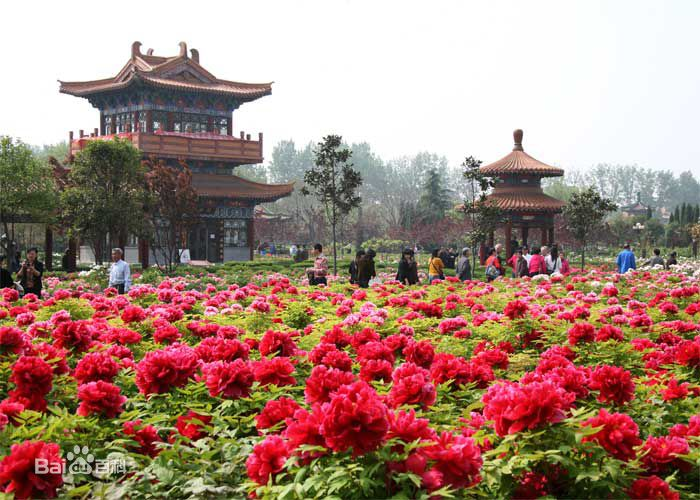
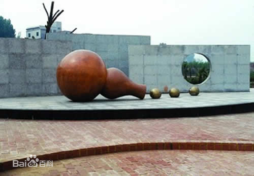
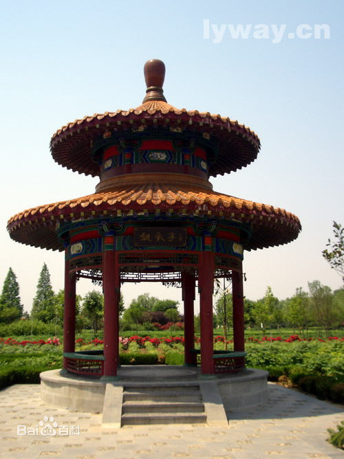
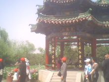
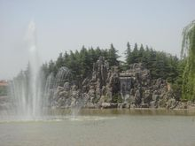

中国国花园始建于2001年9月，是我国目前最大的牡丹专类观赏园，位于河南省洛阳市洛河南岸隋唐城遗址之上，东起洛龙路，西至牡丹桥，南临洛宜路，北依洛河，东西长2400米，南北最宽524米，占地1548亩。中国国花园以隋唐历史文化为底蕴，以牡丹文化为主要内容，融历史文化、牡丹文化和园林景观为一体，充分展示了牡丹之美、之清、之幽，享有“中国国花第一园”之美誉。自西向东共分为六个景区，即：西入口景区、牡丹文化区、牡丹历史文化区、堤面游赏区、东入口景区、生产管理区。其中种植牡丹1000多个品种50万株，包含牡丹的九大色系，种植乔、灌木及各类植物100多个品种200余万株。在环境布置上以植物见长，自然流畅，突出体现了传统皇家园林的造园风格。
中国国花园的东主入口景区，主体是古建筑群，额基部的彩绘生动逼真，栩栩如生，绘有牡丹、凤凰的彩图，象征着富贵、吉祥，并附有洛阳著名的旅游景点龙门石窟、白马寺和享有盛名的“洛阳唐三彩”，个个色彩斑斓、绚丽多彩！
中国国花园的西入口景区，这是一个具有现代感的建筑体。钢板结构，总重达60余吨。由孔雀与牡丹雕塑组合而成，同样象征着吉祥与富贵。整体结构犹如一个拱桥，寓意着“以花为媒，广交朋友”，建立友谊的桥梁。
传说天上仙宫里的牡丹仙子来到人间，最终在洛阳的翠云峰住下，并画了一百个牡丹品种。后来居上的第一百个牡丹品种就是洛阳的“紫根牡丹”。因为八月十五这天牡丹仙子下凡人间，在洛阳画过、种过牡丹。所以，洛阳人就把八月十五这天定为牡丹的生日。
 葛巾玉板广场
相传有一位洛阳人名叫常大用，很喜欢牡丹花，听说曹州（今山东菏泽）的牡丹绝好，就前去欣赏，并在一个花园里住下。一天，在欣赏牡丹时遇见了一位貌美如花的姑娘——葛巾，很是喜欢，以为是仙女下凡，便终日难眠。谁知，郎有情，妾有意，最后结为夫妇。常大用问葛巾的姓氏，葛巾只说：“你既然认为我是神仙，又何必在乎我姓什么。”回到洛阳后他俩又做媒，把葛巾的妹妹玉板许配给常大用的弟弟。两年后，葛巾和玉板各得一子，才第一次告诉常大用自己姓魏，母亲是曹州第一夫人。常大用怀疑，就请人去曹州打听，得知曹州根本没有魏氏。他便亲自前去曹州证实，才从一块石壁上的一首诗中得知，曹州确实没有魏氏，而曹州第一夫人则是一株名为“葛巾紫”的牡丹。常大用以为自己的妻子是花妖。回去后，他不敢当面质问，就把那首诗让葛巾看，葛巾看后大怒，认为丈夫不相信自己，一气之下就和玉板将孩子扔到地上，谁知孩子落地便没有了。葛巾和玉板后悔不已。几天后孩子落地的地方长出了两株牡丹，一紫一白，花朵大如盘，名为“葛巾”、“玉板”。
传说，太上老君炼好的金丹散落在龙门山石缝里，金丹落地便长出三棵火红的牡丹，就名为“火炼金丹”。
 火炼金丹广场
传说有一位花农叫秋翁，他很喜欢种牡丹花。每天辛勤地培育园内的牡丹，把他们当成自己的亲人一样尽心照顾，牡丹花开了，香飘万里，百花齐放，连路人也不禁想摘下一朵，秋翁赶忙上前阻止。邻家小孩顽皮，不小心踩坏了牡丹花，爱花如命的秋翁并没有责怪他们，而是耐心的告诉孩子们花是有生命和养花不易的道理，并在秋翁的照料下使踩坏的牡丹又恢复了生机。秋翁种的牡丹家喻户晓。可是好景不长，当地恶霸听闻秋翁种有百花齐放的牡丹，就前来抢夺，秋翁当然不从，以死护花，恶霸就毁了园里的花，并诬蔑秋翁会使妖法。秋翁痛不欲生，伤心极了。这时，牡丹仙子得知秋翁如此爱花，就下凡人间，救出秋翁，铲除恶霸，并把毁坏的花园还原了，从此，秋翁的牡丹花比以前开的更艳、更大。
 秋翁遇仙广场
二乔同花异色，令人叹为观止。当代诗人张民赞到：“二色浅深皆不同，洛阳锦绣夺天工。乔公出许东风聘，可爱深红爱浅红。”讲的是牡丹二乔的奇特真是巧夺天工。犹如三国时期的“二乔”，姿色娇艳，美丽动人。
李白在《清平调》三章中写道：“一支红艳露凝香，云雨巫山枉断肠。借问汉宫谁得以，可怜飞燕倚新妆。”赞美了杨贵妃的美貌无人能比，听的唐玄宗与杨贵妃眉开眼笑。
 欧阳修碑广场
宋代文学家欧阳修在天圣末年（1031年）到洛阳，历经四春，亲见洛阳牡丹盛况及当地人酷爱牡丹的风俗，就开始创作了《洛阳牡丹记》，景佑元年（1034年）完成，词中讲到“牡丹出丹州、延州，东出青州，南出越州，而出洛阳者今为天下第一”。这也是“洛阳牡丹甲天下”的由来。这部文词最重要的特点是对牡丹品种演化有细致的观察和记述
以唐代伟大诗人白居易为首的文人墨客，在以诗歌反映生活的艺术创作中，将对牡丹的赞颂寄予笔下，首开洛阳诗词创作之先河，白居易在《牡丹芳》中赞到“花开花落二十日，一城之人皆若狂。”讲的是洛阳牡丹花好，使游人若狂，而牡丹花期短暂，也使人若狂，莫失良机，争相观赏，甚至夜间掌灯观看。真实的反映了洛阳牡丹的繁荣与发展。
自古有“掇山必须理水，山以水为血脉，故山得水而活，水以山为颜面，故水得山而媚”之说，衍秀湖占地30余亩，由丹荷廊贯穿，湖面波光粼粼，石岸蜿蜒崎岖，草坡起伏，植物点缀，清新怡人，这座假山仪态万千，扑朔迷离，石洞崎岖盘延，令人向往。山石因水顿生灵气，李白曾形容庐山瀑布“飞流直下三千尺，疑是银河落九天”的壮丽景色。虽然这座假山的瀑布没有庐山瀑布的壮观，但在公园里起着画龙点睛的作用，飞泻而下的水流呈现出千姿百态的瀑形，重现了“山不在高，有瀑则活”的意境。
 衍秀湖和无名山
旺季：04月01日-10月07日 开放时间： 07:30-22:00
10月08日-10月31日 07:30-18:00
淡季：02月01日-03月31日 开放时间： 08:00-18:00
11月01日-次年01月31日 08:00-17:30
乘53、55、61、69、81、33、57路公交车“中国国花园”站下车。西门位于牡丹桥南，乘68、62、37、15路公交车“牡丹桥南”下车。